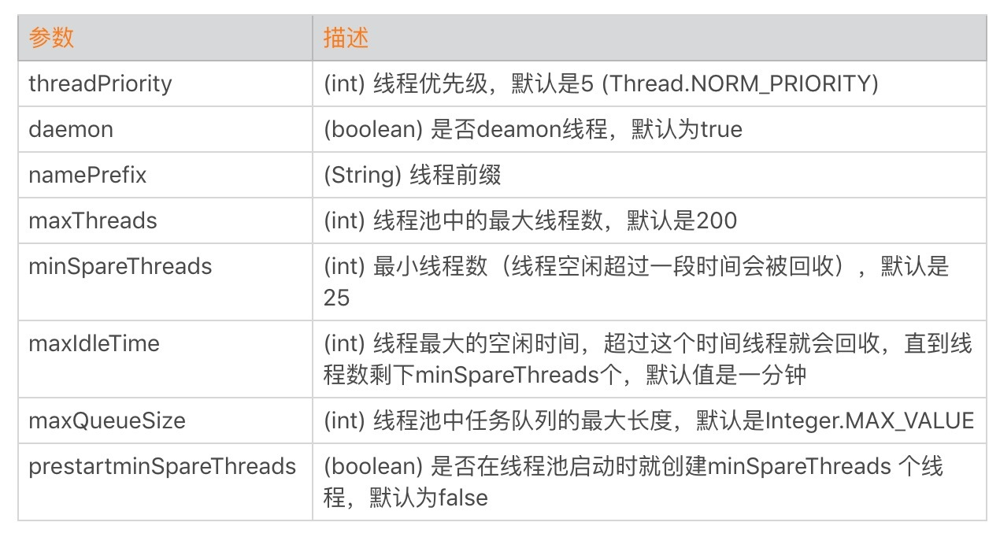

- 00 开篇词 Java程序员如何快速成长？.md.html
- 01 Web容器学习路径.md.html
- 02 HTTP协议必知必会.md.html
- 03 你应该知道的Servlet规范和Servlet容器.md.html
- 04 实战：纯手工打造和运行一个Servlet.md.html
- 05 Tomcat系统架构（上）： 连接器是如何设计的？.md.html
- 06 Tomcat系统架构（下）：聊聊多层容器的设计.md.html
- 07 Tomcat如何实现一键式启停？.md.html
- 08 Tomcat的“高层们”都负责做什么？.md.html
- 09 比较：Jetty架构特点之Connector组件.md.html
- 10 比较：Jetty架构特点之Handler组件.md.html
- 11 总结：从Tomcat和Jetty中提炼组件化设计规范.md.html
- 12 实战：优化并提高Tomcat启动速度.md.html
- 13 热点问题答疑（1）：如何学习源码？.md.html
- 14 NioEndpoint组件：Tomcat如何实现非阻塞I_O？.md.html
- 15 Nio2Endpoint组件：Tomcat如何实现异步I_O？.md.html
- 16 AprEndpoint组件：Tomcat APR提高I_O性能的秘密.md.html
- 17 Executor组件：Tomcat如何扩展Java线程池？.md.html
- 18 新特性：Tomcat如何支持WebSocket？.md.html
- 19 比较：Jetty的线程策略EatWhatYouKill.md.html
- 20 总结：Tomcat和Jetty中的对象池技术.md.html
- 21 总结：Tomcat和Jetty的高性能、高并发之道.md.html
- 22 热点问题答疑（2）：内核如何阻塞与唤醒进程？.md.html
- 23 Host容器：Tomcat如何实现热部署和热加载？.md.html
- 24 Context容器（上）：Tomcat如何打破双亲委托机制？.md.html
- 25 Context容器（中）：Tomcat如何隔离Web应用？.md.html
- 26 Context容器（下）：Tomcat如何实现Servlet规范？.md.html
- 27 新特性：Tomcat如何支持异步Servlet？.md.html
- 28 新特性：Spring Boot如何使用内嵌式的Tomcat和Jetty？.md.html
- 29 比较：Jetty如何实现具有上下文信息的责任链？.md.html
- 30 热点问题答疑（3）：Spring框架中的设计模式.md.html
- 31 Logger组件：Tomcat的日志框架及实战.md.html
- 32 Manager组件：Tomcat的Session管理机制解析.md.html
- 33 Cluster组件：Tomcat的集群通信原理.md.html
- 34 JVM GC原理及调优的基本思路.md.html
- 35 如何监控Tomcat的性能？.md.html
- 36 Tomcat I_O和线程池的并发调优.md.html
- 37 Tomcat内存溢出的原因分析及调优.md.html
- 38 Tomcat拒绝连接原因分析及网络优化.md.html
- 39 Tomcat进程占用CPU过高怎么办？.md.html
- 40 谈谈Jetty性能调优的思路.md.html
- 41 热点问题答疑（4）： Tomcat和Jetty有哪些不同？.md.html
- 特别放送 如何持续保持对学习的兴趣？.md.html
- 结束语 静下心来，品味经典.md.html
- 捐赠
36 Tomcat I_O和线程池的并发调优
上一期我们谈到了如何监控Tomcat的性能指标，在这个基础上，今天我们接着聊如何对Tomcat进行调优。
Tomcat的调优涉及I/O模型和线程池调优、JVM内存调优以及网络优化等，今天我们来聊聊I/O模型和线程池调优，由于Web应用程序跑在Tomcat的工作线程中，因此Web应用对请求的处理时间也直接影响Tomcat整体的性能，而Tomcat和Web应用在运行过程中所用到的资源都来自于操作系统，因此调优需要将服务端看作是一个整体来考虑。
所谓的I/O调优指的是选择NIO、NIO.2还是APR，而线程池调优指的是给Tomcat的线程池设置合适的参数，使得Tomcat能够又快又好地处理请求。
I/O模型的选择
I/O调优实际上是连接器类型的选择，一般情况下默认都是NIO，在绝大多数情况下都是够用的，除非你的Web应用用到了TLS加密传输，而且对性能要求极高，这个时候可以考虑APR，因为APR通过OpenSSL来处理TLS握手和加/解密。OpenSSL本身用C语言实现，它还对TLS通信做了优化，所以性能比Java要高。
那你可能会问那什么时候考虑选择NIO.2？我的建议是如果你的Tomcat跑在Windows平台上，并且HTTP请求的数据量比较大，可以考虑NIO.2，这是因为Windows从操作系统层面实现了真正意义上的异步I/O，如果传输的数据量比较大，异步I/O的效果就能显现出来。
如果你的Tomcat跑在Linux平台上，建议使用NIO，这是因为Linux内核没有很完善地支持异步I/O模型，因此JVM并没有采用原生的Linux异步I/O，而是在应用层面通过epoll模拟了异步I/O模型，只是Java NIO的使用者感觉不到而已。因此可以这样理解，在Linux平台上，Java NIO和Java NIO.2底层都是通过epoll来实现的，但是Java NIO更加简单高效。
线程池调优
跟I/O模型紧密相关的是线程池，线程池的调优就是设置合理的线程池参数。我们先来看看Tomcat线程池中有哪些关键参数：

这里面最核心的就是如何确定maxThreads的值，如果这个参数设置小了，Tomcat会发生线程饥饿，并且请求的处理会在队列中排队等待，导致响应时间变长；如果maxThreads参数值过大，同样也会有问题，因为服务器的CPU的核数有限，线程数太多会导致线程在CPU上来回切换，耗费大量的切换开销。
那maxThreads设置成多少才算是合适呢？为了理解清楚这个问题，我们先来看看什么是利特尔法则（Little’s Law）。
利特尔法则
系统中的请求数 = 请求的到达速率 × 每个请求处理时间
其实这个公式很好理解，我举个我们身边的例子：我们去超市购物结账需要排队，但是你是如何估算一个队列有多长呢？队列中如果每个人都买很多东西，那么结账的时间就越长，队列也会越长；同理，短时间一下有很多人来收银台结账，队列也会变长。因此队列的长度等于新人加入队列的频率乘以平均每个人处理的时间。
计算出了队列的长度，那么我们就创建相应数量的线程来处理请求，这样既能以最快的速度处理完所有请求，同时又没有额外的线程资源闲置和浪费。
假设一个单核服务器在接收请求：
- 如果每秒10个请求到达，平均处理一个请求需要1秒，那么服务器任何时候都有10个请求在处理，即需要10个线程。
- 如果每秒10个请求到达，平均处理一个请求需要2秒，那么服务器在每个时刻都有20个请求在处理，因此需要20个线程。
- 如果每秒10000个请求到达，平均处理一个请求需要1秒，那么服务器在每个时刻都有10000个请求在处理，因此需要10000个线程。
因此可以总结出一个公式：
线程池大小 = 每秒请求数 × 平均请求处理时间
这是理想的情况，也就是说线程一直在忙着干活，没有被阻塞在I/O等待上。实际上任务在执行中，线程不可避免会发生阻塞，比如阻塞在I/O等待上，等待数据库或者下游服务的数据返回，虽然通过非阻塞I/O模型可以减少线程的等待，但是数据在用户空间和内核空间拷贝过程中，线程还是阻塞的。线程一阻塞就会让出CPU，线程闲置下来，就好像工作人员不可能24小时不间断地处理客户的请求，解决办法就是增加工作人员的数量，一个人去休息另一个人再顶上。对应到线程池就是增加线程数量，因此I/O密集型应用需要设置更多的线程。
线程I/O时间与CPU时间
至此我们又得到一个线程池个数的计算公式，假设服务器是单核的：
线程池大小 = （线程I/O阻塞时间 + 线程CPU时间 ）/ 线程CPU时间
其中：线程I/O阻塞时间 + 线程CPU时间 = 平均请求处理时间
对比一下两个公式，你会发现，平均请求处理时间在两个公式里都出现了，这说明请求时间越长，需要更多的线程是毫无疑问的。
不同的是第一个公式是用每秒请求数来乘以请求处理时间；而第二个公式用请求处理时间来除以线程CPU时间，请注意CPU时间是小于请求处理时间的。
虽然这两个公式是从不同的角度来看待问题的，但都是理想情况，都有一定的前提条件。
- 请求处理时间越长，需要的线程数越多，但前提是CPU核数要足够，如果一个CPU来支撑10000 TPS并发，创建10000个线程，显然不合理，会造成大量线程上下文切换。
- 请求处理过程中，I/O等待时间越长，需要的线程数越多，前提是CUP时间和I/O时间的比率要计算的足够准确。
- 请求进来的速率越快，需要的线程数越多，前提是CPU核数也要跟上。
实际场景下如何确定线程数
那么在实际情况下，线程池的个数如何确定呢？这是一个迭代的过程，先用上面两个公式大概算出理想的线程数，再反复压测调整，从而达到最优。
一般来说，如果系统的TPS要求足够大，用第一个公式算出来的线程数往往会比公式二算出来的要大。我建议选取这两个值中间更靠近公式二的值。也就是先设置一个较小的线程数，然后进行压测，当达到系统极限时（错误数增加，或者响应时间大幅增加），再逐步加大线程数，当增加到某个值，再增加线程数也无济于事，甚至TPS反而下降，那这个值可以认为是最佳线程数。
线程池中其他的参数，最好就用默认值，能不改就不改，除非在压测的过程发现了瓶颈。如果发现了问题就需要调整，比如maxQueueSize，如果大量任务来不及处理都堆积在maxQueueSize中，会导致内存耗尽，这个时候就需要给maxQueueSize设一个限制。当然，这是一个比较极端的情况了。
再比如minSpareThreads参数，默认是25个线程，如果你发现系统在闲的时候用不到25个线程，就可以调小一点；如果系统在大部分时间都比较忙，线程池中的线程总是远远多于25个，这个时候你就可以把这个参数调大一点，因为这样线程池就不需要反复地创建和销毁线程了。
本期精华
今天我们学习了I/O调优，也就是如何选择连接器的类型，以及在选择过程中有哪些需要注意的地方。
后面还聊到Tomcat线程池的各种参数，其中最重要的参数是最大线程数maxThreads。理论上我们可以通过利特尔法则或者CPU时间与I/O时间的比率，计算出一个理想值，这个值只具有指导意义，因为它受到各种资源的限制，实际场景中，我们需要在理想值的基础上进行压测，来获得最佳线程数。
课后思考
其实调优很多时候都是在找系统瓶颈，假如有个状况：系统响应比较慢，但CPU的用率不高，内存有所增加，通过分析Heap Dump发现大量请求堆积在线程池的队列中，请问这种情况下应该怎么办呢？
不知道今天的内容你消化得如何？如果还有疑问，请大胆的在留言区提问，也欢迎你把你的课后思考和心得记录下来，与我和其他同学一起讨论。如果你觉得今天有所收获，欢迎你把它分享给你的朋友。
© 2019 - 2023 Liangliang Lee. Powered by gin and hexo-theme-book.